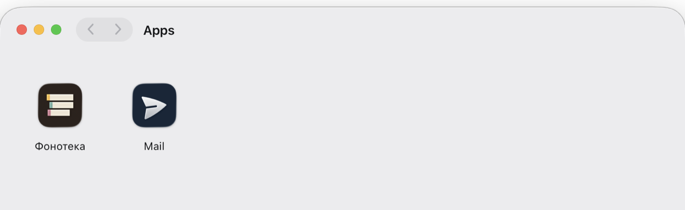

No bundle
No Electron, no Chromium in your download, no build pipeline for a second target. Pier is 3.2 MB and already on the person’s machine; the app it makes is a shortcut to your site with native powers.
Pier is a small runtime on the person’s Mac. It reads the web app manifest you already ship and opens your site in a window of its own, with the files, ports and devices a browser keeps out of reach.
0.5.0, macOS 14 and later, 3.2 MB, signed and notarized
No Electron, no Chromium in your download, no build pipeline for a second target. Pier is 3.2 MB and already on the person’s machine; the app it makes is a shortcut to your site with native powers.
No developer account, no notarization, no review, no yearly fee. The app is built and signed on the person’s own machine, so it opens without warnings.
Ship as usual. The app loads your site, so a deploy reaches everyone at once — no version to bump, no update to push, nobody stuck on an old build.
Tabs, the address bar and someone else’s buttons go away, and the page runs the same code it always did. It gets a real titlebar, a menu bar of its own and keyboard shortcuts that work even when the window is hidden.
A link outside your scope opens in the browser, so the app stays your app.
Closing the window does not kill it: audio keeps playing, connections stay up, notifications still arrive. Sign-ins survive quitting, and the first launch opens on the page the person was reading in the tab.

~/Applications/Pier, so Spotlight and
Launchpad find them like any other. Removing one is dragging it to the
Trash.
window.epwa appears only inside the app, so the same code still
runs in any browser. Declare what you need in the manifest; anything you did
not declare answers with an error, even when your code asks for it.
| Declare | And your page can |
|---|---|
| nothing | Drive the window and titlebar, fill the menu bar and the Dock menu, register global shortcuts, keep running in the background, store secrets in the Keychain, ask for Touch ID |
files |
Open and save through system panels, then read, write, watch and trash what the person picked — across launches, without ever seeing a path |
network |
Fetch without CORS, open TCP, TLS and UDP sockets, browse Bonjour, accept incoming connections (loopback unless the person allows more) |
serial usb hid bluetooth midi |
Talk to the device the person picked in the system chooser. Keyboards, pointers and security keys are never handed over |
notifications |
Post native notifications with buttons, a reply field and attachments, and hear about every click |
camera microphone location screen |
Ask the operating system. It prompts, it decides, and Pier cannot work around the answer |
144 methods and 50 events in total: the full reference is generated from the same spec the runtime is tested against, so it cannot drift from the code.
Two things, once: a few keys in the manifest you probably already have, and a
button that opens an epwa:// link. That is the whole integration.
{
"name": "Phonotheque",
"id": "/app",
"start_url": "/app",
"scope": "/app",
"display": "standalone",
"icons": [{ "src": "/icon-512.png", "sizes": "512x512" }],
"epwa": { "permissions": ["files", "midi"] }
}import { canInstallApp, launchApp } from './pier-launch.js';
button.hidden = !canInstallApp();
button.onclick = () => launchApp({
manifest: '/manifest.webmanifest',
handoff: { track: player.currentTrack },
onLaunched: () => player.pause(),
});The helper is one file, no build step; it hides the button
where Pier cannot run and hands the app whatever state the visitor had in the
tab. Lint a manifest before you publish it:
web-runtime check <url>.
Point it at a site you are working on and watch the tab become an app. Pier updates itself, so this is the only download.